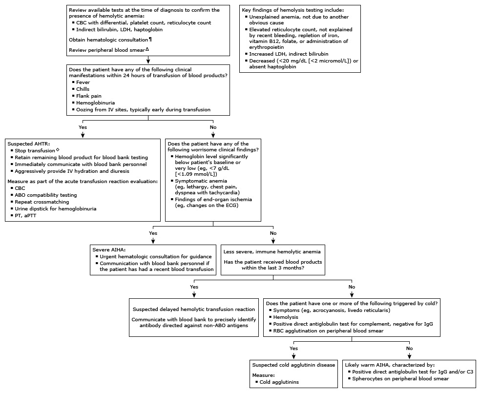

CBC: complete blood count; LDH: lactate dehydrogenase; IV: intravenous; AHTR: acute hemolytic transfusion reaction; PT: prothrombin time; aPTT: activated partial thromboplastin time; ECG: electrocardiogram; AIHA: autoimmune hemolytic anemia; IgG: immunoglobulin G; RBC: red blood cell.
* The antiglobulin (Coombs) test is typically performed in a patient with suspected hemolytic anemia. Negative (normal) test: No agglutination present. Positive (abnormal) test: Strength of agglutination graded 1 to 4+.
¶ Clinical history, laboratory results, and peripheral blood smear findings guide further testing and urgency of specialty consultation.
Δ Review of peripheral blood smear by an experienced individual may identify abnormalities not detected by automated machines.
◊ Life-saving interventions should not be delayed while awaiting the results of diagnostic testing.